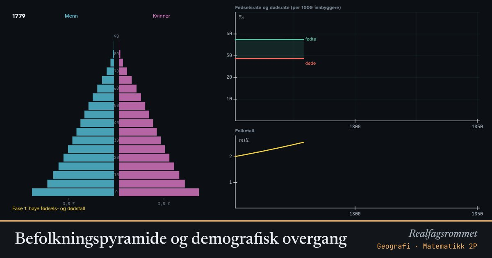

Befolkningspyramide og demografisk overgang
Hvor mange barn hver kvinne får, og hvor lenge folk lever, bestemmer formen på befolkningspyramiden. Mange land har gått gjennom de samme fasene, fra høye til lave fødsels- og dødstall.
Start animasjonen
Formler
Om animasjonen
Pyramiden viser hvor mange som er i hver aldersgruppe, med menn til venstre og kvinner til høyre. Grafen viser fødselsraten og dødsraten i promille, og folketallet.
I demografisk overgang følger modellen et forenklet forløp som ligner det Norge har vært gjennom fra 1800 til i dag. Først faller dødstallene på grunn av bedre mat, hygiene og medisin. Fødselstallene faller senere, og i mellomtiden vokser befolkningen raskt.
Det trengs omtrent 2,1 barn per kvinne for at befolkningen skal erstatte seg selv på lang sikt. Norge hadde 1,4 i 2023. Med lav fruktbarhet og lang levealder blir pyramiden smal nederst og bred øverst: en eldre befolkning.
Modellen tar ikke med inn- og utvandring. Den er forenklet og viser mønstre, ikke virkelige tall for et bestemt land.
Prøv dette
- I hvilken fase vokser befolkningen raskest? Hvorfor?
- Sett 6 barn per kvinne og 60 års levealder. Beskriv pyramiden. Hvilke land ligner dette på?
- Hva skjer med andelen over 65 år når levealderen øker og fruktbarheten synker? Hvilke utfordringer gir det?
- Hvorfor fortsetter befolkningen å vokse en stund etter at fruktbarheten har sunket under 2,1?
Kompetansemål
- Geografi: Befolkningsutvikling og demografi
- Matematikk 2P: Befolkningsmodeller
Mer om vekst, økonomi og modeller
- Prosent, vekstfaktor og renters rente
- Lån: annuitetslån og serielån
- Sparing og lån som geometriske rekker
- Eksponentiell og logistisk vekst
- Regresjon og minste kvadraters metode
- Kostnad, inntekt og overskudd